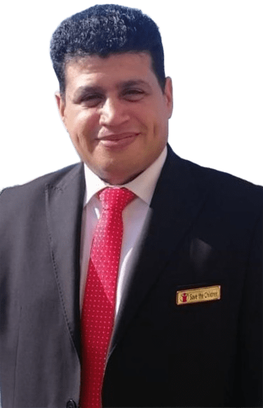

About Me

I am a development professional with over 15 years of experience in project management, education reform, and community development.
My expertise lies in designing and implementing comprehensive development programs that empower marginalized communities, with a special focus on women's empowerment and education initiatives.
Throughout my career, I have successfully managed multimillion-dollar projects, built strategic partnerships, and led diverse teams to achieve sustainable development goals.
My approach combines academic rigor with practical field experience, ensuring that programs are both theoretically sound and effectively implemented.
Education
- Ph.D: Crisis and Risks Management – Cairo University
- Master of Public Policies and Development Projects Evaluation
- MBA (Business Administration - HR) - Ain Shams University
- Diploma in Education - Qena, South Valley University (2007)
- Diploma in Social Development – Mina University (2004)
- BA of Arts – Sohag University
Experience
-
Comprehensive Development and Empowerment of Women Project Manager
Life Makers Foundation - Sohag
- Established 22 KG classes in Tema.
- Opened 200 literacy classes for 3,000 women.
- Improved economic situation for 1,000 women. -
Education Officer – LV Project
Save The Children - Sohag
- Provided technical support for education programs.
- Conducted field visits and monitored community schools. -
Community Education Senior Officer
Misr Elkheir Foundation
- Prepared training materials and needs assessments.
- Managed program technical & finance teams. -
Technical Support & Capacity Building Specialist
Education Support Program - Qena (2012-2013)
- Developed training materials.
- Monitored social worker department plans. -
Monitoring and Evaluation Coordinator
Aid to Artisans & YALE University (USAID Funded) -
Protective Environment and Strengthened Capacity Project
(Refugees Support in Aswan)
- Provided multi-sector support for refugees and vulnerable migrants. -
Program Responsible (Qena Area Manager)
Education Reform Program – Partner NGO FEDA (2007-2008)
- Supervised literacy and scholarship components. -
School Based Reform Officer
Education Reform Program - Qena (2006-2007)
- Supported school development plans.
Skills
- Project Management
- Capacity Building & Training
- Monitoring & Evaluation
- Community Development
- Strategic Planning
- Budgeting & Financial Management
Contact
Email: atef.helmy.atef@gmail.com
Phone: +201227653141 / +201152340949
Home: 0934765505